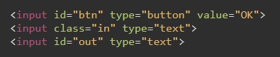
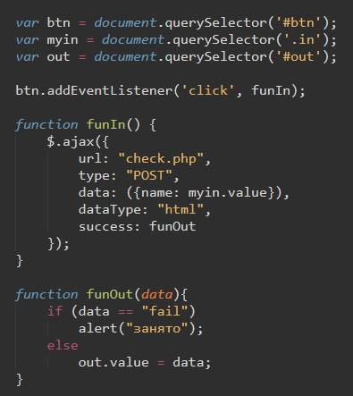
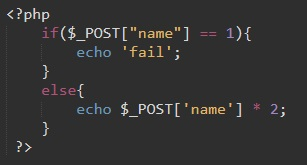
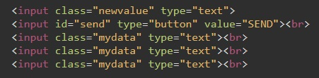
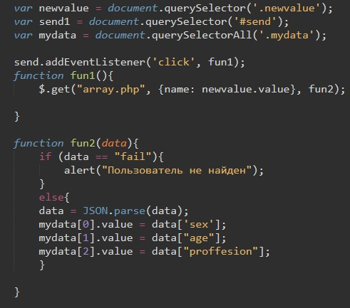
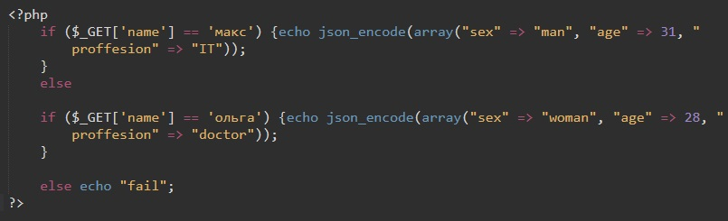

AJAX - это технология которая позволяет получать данные от сервера не перезагружая страницу.
Рассмотрим следующую задачу. У нас будет поле ввода input, в которое мы будем вводить число. После нажатия на кнопку это число на стороне сервера будет умножаться на 2, затем возвращаться на сторону клиента и будет выводиться в value второго поля ввода. и все это без перезагрузки страницы.
сначала рассмотрим код html:
Все по минимуму одна кнопка и два поля ввода
Теперь рассмотрим код JavaScript
Первое что мы делаем это создаем переменные - экземпляры объектов нашей кнопки и полей ввода.
Затем мы обращаемся нашей кнопке и прослушиваем событие click, в случае события выполняется функция funIn
Теперь рассмотрим эту функцию:
При помощи библиотеки jQuery мы вызываем метод ajax. Входящим параметром этого метода является массив. Подробнее об элементах массива можно почитать здесь. Ну а мы рассмотрим основные элементы этого массива:
Теперь рассмотрим саму функцию funOut
Входящим параметром этой функции обязательно долен атрибут data. Этот атрибут содержит в себе данные которые возвратил наш файл php на сервере.
немного прервемся для того что бы рассмотреть фойл php что бы потом вернуться к нашей функции funOut
Код php:
Итак в наш фал php методом POST пришли данные из переменной name. Значит все данные в php попали в ассоциативный массив. Обращаться к этому мссиву мы можем как обычно: $_POST["имя_элемента"]
Хохмы ради мы создали здесь оператор условия. Если значение параметра name будет равно 1, то вызвращается значение fail (возвращение идет через метод echo)
Иначе, мы наше значение элемента массива умножаем на 2 и возвращаем результат. Т.е. значение возращаемое значение php файла будет либо fail либо число умноженное на 2
Теперь вернемся к нашей функции в JAVASCRIPT
Здесь если значение data равно fail вызывается метод allert с надписью "занято", иначе - мы присваиваем наше значение в поле OUT
Предыдущий пример работает только в том случае если нам надо вернуть одно значение. А что если нам надо с сервера получить массив значений. Например данные из базы данных. Для этого используется метод JSON
Рассмотрим пример: цель - в зависимости от введенного значения поля input будут выводиться определенные значения. К примеру, в поле введем "макс" жмем кнопку и остальные поля заполняются данным пола, возраста и профессии
Рассмотрм код html:
Поле ввода, кнопка и три поля вывода
Код JavaScript
Так же объявляем три переменные - экземпляры объектов (кнопка и поля ввода/вывода)
Так же прослушиваем событие click у кнопки по которому вызываем функцию.
В функции мы с помощь. jQuery вызываем уже метод get (можно и post, но тогда в php файле используем POST)
Входящим параметром метода get так же является массив:
Перед тем как разбирать вторую функцию рассмотрим код php:
Если значение элемента ассоциативного массива с индексом name равно "макс", то методом json_encode возвращается массив значений. А дальше ассоциативный массив со значениями. Идентификатораи элементом являются пол, возраст и профессия.
Так проверяется два значения, если ни первое ни второе не подходит возвращается слово "fail"
Теперь вернемся к нашей второй функции в JavaScript
Здесь так же обязательно входным параметром является атрибут data. Внутри функции идет оператор сравнения: если значение data равно "fail" то вызывается метод alert с уведомлением. Иначе - мы включаем JSON.parse (парсинг значений data). Только после этого мы можем обращаться к массиву полученных значений используя идентификаторы ассоциативного массива. В значения полей мы помещаем те значения который вернул нам файл php